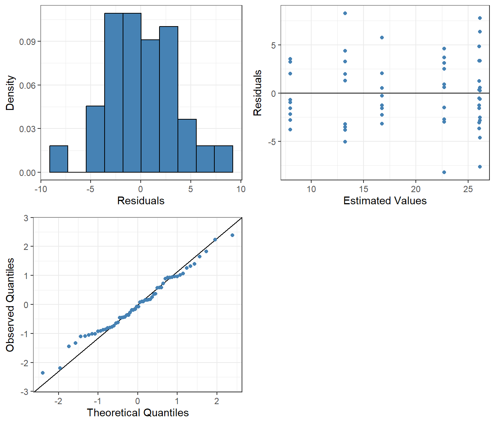
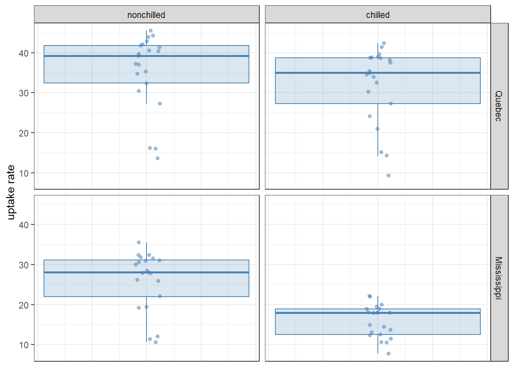
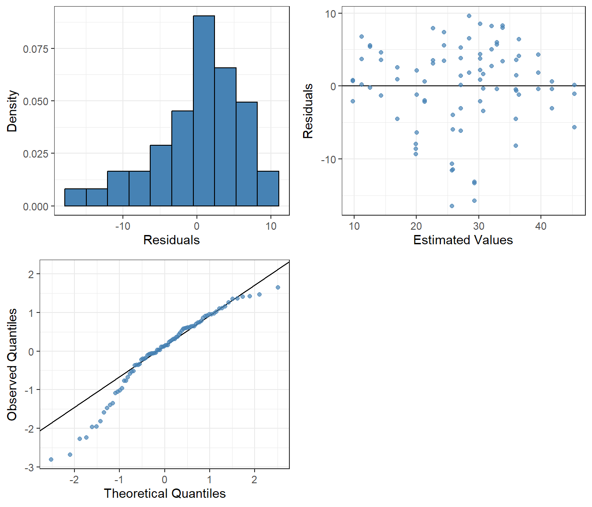

Chapter 19 discussed techniques for analyzing data which fall into multiple categories, but those categories are levels of a single factor. Here we go further and work with data classified by two independent factors.
20.1 Two-way ANOVA
A good example is provided by the built-in dataset ToothGrowth, which contains data on the tooth growth of Guinea pigs in response to receiving vitamin C.
As seen, there are three dosage levels (0.5, 1, and 2) and two types of supplement (VC for vitamin C in the form of raw ascorbic acid, and OJ for orange juice). As usual, we first visualize the data. In doing so, it is important to convert dose to a factor (Section 8.5): the three dosage levels play the role of a categorical variable (“low”, “medium” ,and “high” levels of vitamin C dosage), and we are not so interested in the actual magnitudes of those dosages.
as_tibble(ToothGrowth) |>mutate(dose =as_factor(dose)) |>ggplot(aes(x = supp, y = len)) +geom_boxplot(alpha =0.2, outlier.shape =NA,color ="steelblue", fill ="steelblue") +geom_jitter(alpha =0.4, width =0.05, color ="steelblue") +labs(x ="vitamin C dosage [mg/day]", y ="tooth length [mm]") +facet_grid(. ~ dose, labeller = label_both) +theme_bw()
Figure 20.1: Distribution of tooth growth for all combinations of factors
Our interpretation of the figure show that in general the higher the dosage the longer the teeth become, indicating there is some kind of effect. We would also expect an effect of supplement type, because orange juice seems to perform better (at least no worse) than raw ascorbic acid in facilitating tooth growth.
Continuing with the linear models from Chapter 19, we should first provide a factor effect coding to the two variables and then estimate a model:
Analysis of Variance Table
Response: len
Df Sum Sq Mean Sq F value Pr(>F)
dose 2 2426.43 1213.22 82.811 < 2.2e-16 ***
supp 1 205.35 205.35 14.017 0.0004293 ***
Residuals 56 820.43 14.65
---
Signif. codes: 0 '***' 0.001 '**' 0.01 '*' 0.05 '.' 0.1 ' ' 1
The new feature above is the inclusion of dose + supp as the predictor, instead of just a single one. Mathematically, this translates to the following model:
\[
\begin{aligned}
X_{1jk} &=
\begin{cases}
1 \quad &\text{if dose 0.5}\\
-1 &\text{if dose 2}\\
0 &\text{otherwise}
\end{cases} \\
X_{2jk} &=
\begin{cases}
1 \quad &\text{if dose 1}\\
-1 &\text{if dose 2}\\
0 &\text{otherwise}
\end{cases} \\
X_{i1k} &=
\begin{cases}
1 \quad &\text{if supp OJ}\\
-1 &\text{if supp VC}\\
0 &\text{otherwise}
\end{cases}
\end{aligned}
\] As seen from the ANOVA table above, both dosage and supplement type appear to have a real effect on tooth growth using a 5% level of significance.
20.1.1 Interactions
However, this model ignores something that might be potentially relevant: the interaction between the two factors. This means that the nature of the relationship between tooth length and one of the predictors depends on the value of the other predictor. For the Guinea pig data, a case can be made based on Figure 20.1 that the effect of the supplement type depends on dosage: when the dosage level is either 0.5 or 1 mg/day, orange juice leads to longer teeth than ascorbic acid—but this benefit disappears at the highest dosage level of 2 mg/day.
This is more easily seen in an interaction plot that uses the cell means as a representation of the effect for each combination of factor levels. If the lines diverge or come together — i.e. they are not parallel — we have an indication that there might be some interaction effects happening.
# Calculates cell meansmeans <- ToothGrowth |>group_by(supp, dose) |>summarize(mean =mean(len) ) |>ungroup()# Shows each cell meanggplot(ToothGrowth) +aes(x = dose, y = len, group = supp, color = supp) +geom_point(alpha =0.5) +theme_bw() +scale_color_manual("Supplement", values =c("steelblue", "#d9230f")) +geom_line(data = means,aes(y = mean), linewidth =1.2 ) +labs(x ="Dose", y ="Length")
Figure 20.2: Interaction plot of the cell means
Accounting for interaction terms in a regression model is easy. All one needs to do is add one more term to the formula, denoted dose:supp:
Analysis of Variance Table
Response: len
Df Sum Sq Mean Sq F value Pr(>F)
dose 2 2426.43 1213.22 92.000 < 2.2e-16 ***
supp 1 205.35 205.35 15.572 0.0002312 ***
dose:supp 2 108.32 54.16 4.107 0.0218603 *
Residuals 54 712.11 13.19
---
Signif. codes: 0 '***' 0.001 '**' 0.01 '*' 0.05 '.' 0.1 ' ' 1
The model result confirms that our intuition was likely correct: there does appear to be a real interaction effect between the two factors. Mathematically, the model reads:
where \(\beta_4\) and \(\beta_5\) are the effects of the different products of coded variables. The number of added interactions can be calculated using the product of the number of coded variables for each factor, in this case 2 \(\cdot\) 1.
The inclusion of two factors with their interaction is so common in linear models that there is a shorthand notation to make it easier. Writing dose * supp is exactly the same as the above dose + supp + dose:supp. Let us see this in action:
model <- ToothGrowth |>lm(len ~ dose * supp, data = _) model |>anova()
Analysis of Variance Table
Response: len
Df Sum Sq Mean Sq F value Pr(>F)
dose 2 2426.43 1213.22 92.000 < 2.2e-16 ***
supp 1 205.35 205.35 15.572 0.0002312 ***
dose:supp 2 108.32 54.16 4.107 0.0218603 *
Residuals 54 712.11 13.19
---
Signif. codes: 0 '***' 0.001 '**' 0.01 '*' 0.05 '.' 0.1 ' ' 1
The result is identical to what we had before as we don’t change the variation within either variable. The only difference we would see with factor effect coding is the values of the estimated parameters as they are now interpreted against the overall mean.
20.1.2 Residual analysis
As in the case of one-way ANOVA, diagnostic plots and post-hoc testing (Tukey test) are useful tools. The diagnostic plots look ok, there is some differing variance in the residuals depending on the estimated value, but we can be relatively confident about interpreting the p-values and other statistics of the linear model correctly:
model |>diagnosticPlots()

The F-test is now split into three different components, the interaction and the two main factor effects. Formally they each test the \(\beta\) parameters tied to each of the components from Equation 20.2, for example checking for interaction effects means:
\[
\begin{aligned}
&H_0: \beta_4 = \beta_5 = 0\\
&H_a: \text{At least one } \beta \text{ in } H_0 \ne 0
\end{aligned}
\]
Important
It is important to start the inference with the interaction terms because the result of that test changes how we interpret the others.
If the interaction is found to be significant, we do not interpret the main factor effects because the interaction affects these main effects. Independently testing for the main effect would not include these interactions and we would most likely draw the wrong conclusions.
If the interaction is not found to be significant, we can move on to interpreting each of the individual main factor effects of factor A and B, in the example “dose” and “supplement”.
Looking back at the ANOVA-table and the interaction row, the corresponding p-value is less than 5%. This means that there exist a significant interaction between dose and supplement at a 5% level of significance. As such we do not interpret the tests for the main effects.
20.1.3 Multiple comparisons in two-way ANOVA
Similar to the interpretations of the F-tests, multiple comparisons are affected by the presence — or absence — of an interaction. If the interaction is deemed significant we are no longer interested in comparing the factor level means of each respective factor as we did in the one-way ANOVA model. Instead we need to look at the pairwise differences of the cell means as they include the interaction effect.
The Tukey test can be used to compare each factor in isolation, as well as their combinations by specifying which factor you want to analyze in specs of the emmeans function. In the case of cell means we specify the interaction between the two factors:
means <-emmeans(model, specs =~supp*dose)means |>pairs(adjust ="tukey") |>as_tibble() |>arrange(abs(estimate) |>desc() )
Formally we test for each row the following hypotheses: \[
\begin{aligned}
&H_0: \mu_{ij} - \mu_{i'j'} = 0\\
&H_A: \mu_{ij} - \mu_{i'j'} \ne 0
\end{aligned}
\] where \(i = i'\) and \(j = j'\) cannot both be true at the same time1.
Since we have sorted the table in descending order of magnitude for the differences we can say that the first 11 pairwise differences of cell means are significant.
Note
If the interaction term was not significant, we would instead look at the factor level means similar to the one-way ANOVA model. Using a list of each of the factors the means object now contains two different tables, one for each factor. We can then do pairwise comparisons for each using a Tukey adjustment.
means <-emmeans(model, specs =list("dose", "supp"))
NOTE: Results may be misleading due to involvement in interactions
NOTE: Results may be misleading due to involvement in interactions
Note that the function will warn that the model contains an interaction term which might impact the results, but as long as we have concluded the interaction not have a significant effect we can disregard this warning.
20.2 The Scheirer–Ray–Hare test
For the sake of completeness, we mention that much like in the case of one-way ANOVA, there is a non-parametric version of the two-way ANOVA as well. This is the Scheirer–Ray–Hare test, which is therefore the two-way analogue of the Kruskal–Wallis test. To use this test, one must install and load the package rcompanion:
install.packages("rcompanion")library(rcompanion)
And now, we can use the function scheirerRayHare much like kruskal.test or lm:
ToothGrowth |>scheirerRayHare(len ~ dose * supp, data = _)
DV: len
Observations: 60
D: 0.999222
MS total: 305
Note that this test is skeptical about the role of the supplement type, and definitely thinks that the interaction between it and dosage is not different from what one might get by pure chance. This illustrates one problem with the test: it is not very powerful in detecting patterns, even when they are there. To make matters worse, there is no appropriate post-hoc test available in conjunction with the Scheirer–Ray–Hare test. For these reasons, its use is more restricted than of other non-parametric tests, like the Wilcoxon rank sum and Kruskal–Wallis tests. It is good to know about it as an option, but often one must rely on other methods, such as the parametric two-way ANOVA.
20.3 Interactions in a regression model
In Section 18.1 we introduced adding multiple quantitative and qualitative explanatory variables to a model but we did not include the use of interactions. In Section 20.1.1 we allowed for the two factors to interact and together help explain the response variable and in a multiple regression model we can do the same for any and all combination of quantitative and qualitative variables. The purpose of interactions is to explain more complex — most often non-linear — relationships in a linear model. In fact, one can build arbitrarily complicated linear models from an arbitrary combination of quantitative and qualitative variables, and their interactions.
Let us consider the built-in CO2 dataset as an example, which was already used before in Section 18.3. Briefly, the data contain measurements from an experiment on the cold tolerance of the grass species Echinochloa crus-galli. The dataset has five variables:
Plant (a unique identifier for each plant individual),
Type (either Quebec or Mississippi depending on the origin of the plant),
Treatment (whether the plant individual was chilled or nonchilled for the experiment),
We can plot the observed distributions of CO2 uptake rates for each type and treatment:
as_tibble(CO2) |>ggplot(aes(x =0, y = uptake)) +geom_boxplot(color ="steelblue", fill ="steelblue",alpha =0.2, outlier.shape =NA) +geom_jitter(color ="steelblue", alpha =0.5, width =0.05) +facet_grid(Type ~ Treatment) +labs(y ="uptake rate") +theme_bw() +theme(axis.title.x =element_blank(), # The x-axis is meaningless here,axis.ticks.x =element_blank(), # so remove title, tick marks,axis.text.x =element_blank()) # and labels from it

However this is only part of the story, as becomes obvious if we also plot the ambient CO2 concentrations (conc) along the x-axis:
as_tibble(CO2) |>ggplot(aes(x = conc, y = uptake)) +geom_point(color ="steelblue", alpha =0.8) +facet_grid(Type ~ Treatment) +labs(x ="concentration", y ="uptake rate") +theme_bw()
We see that there is also a clear, saturating relationship between CO2 concentration and uptake rates that is definitely not linear. This does not mean that a linear model is useless for analyzing these data: the trend of whether the data increase or decrease can still be captured (although it is not recommended to use the model for numerical prediction purposes). One model that may come to mind is as follows:
lm(uptake ~ conc + Type * Treatment, data = CO2) |>summary()
Call:
lm(formula = uptake ~ conc + Type * Treatment, data = CO2)
Residuals:
Min 1Q Median 3Q Max
-16.4240 -2.3674 0.7641 3.8749 9.6278
Coefficients:
Estimate Std. Error t value Pr(>|t|)
(Intercept) 27.620528 1.627945 16.966 < 2e-16 ***
conc 0.017731 0.002225 7.969 1.00e-11 ***
TypeMississippi -9.380952 1.851185 -5.068 2.59e-06 ***
Treatmentchilled -3.580952 1.851185 -1.934 0.0566 .
TypeMississippi:Treatmentchilled -6.557143 2.617972 -2.505 0.0143 *
---
Signif. codes: 0 '***' 0.001 '**' 0.01 '*' 0.05 '.' 0.1 ' ' 1
Residual standard error: 5.999 on 79 degrees of freedom
Multiple R-squared: 0.7072, Adjusted R-squared: 0.6923
F-statistic: 47.69 on 4 and 79 DF, p-value: < 2.2e-16
In other words, the uptake rates are modeled via a combination of the effect of concentration (a continuous variable) plus the interaction of type and treatment (two categorical variables). Recall that Type * Treatment is shorthand for Type + Treatment + Type:Treatment, the sum of the main effects and the interaction between them. Mathematically, the equation for the model reads: \[
\begin{split}
(\text{uptake})_i &
= \beta_0
+ \beta_1 \cdot (\text{conc})_i
+ \beta_2 \cdot (\text{Type is Mississippi})_i \\ &
+ \beta_3 \cdot (\text{Treatment is chilled})_i \\ &
+ \beta_4 \cdot (\text{Type is Mississippi})_i \cdot(\text{Treatment is chilled})_i
+ \varepsilon_i
\end{split}
\tag{20.3}\] where \((\text{conc})_i\) is a continuous predictor and not an indicator variable—that is, it takes on the actual value of the CO2 concentration in observation \(i\). By contrast, \((\text{Type is Mississippi})_i\) and \((\text{Treatment is chilled})_i\) are indicator variables that take on the value 1 if data point \(i\) belongs in their category and 0 otherwise.
Note
We could just as easily use factor effect coding even in a regression model. The choice of coding is generally at the will of the analyst but we must take into account how the coding changes the interpretations of the parameter estimates.
The rationale for having chosen the model uptake ~ conc + Type * Treatment is that the box plots above reveal a potential interaction between the two factors Type and Treatment (the effect of changing Treatment from chilled to nonchilled depends on whether the Type was Quebec or Mississippi), and on top of this, we also want to capture the positive dependence on CO2 concentration. The coefficient table tend to concur: the only non-significant parameter at 5% significance is Treatment but that is probably on account of the significant interaction term having an influence on the main effect. If the interaction is significant, the main effect needs to be included in the model to help build the interaction.
To make sure that the assumptions on which this interpretation rests are held, we look at the diagnostic plots:
lm(uptake ~ conc + Type * Treatment, data = CO2) |>diagnosticPlots(alpha =0.7)

The Q-Q plot and histogram are not good: in the lower quantiles, the observed residuals are consistently larger in magnitude — more negative — than the theoretical expectation based on the assumption of normality. This, of course, is a consequence of the data depending on concentrations in a manifestly nonlinear way. We can also be somewhat skeptical about the assumption of equal variance as the residuals seem to be closer together for smaller estimated values and further apart for larger values.
Regardless of how this model looks, one can argue based on the plot of the data that there could also be an interaction between conc and the other two factors. After all, the saturation levels of the uptake rate are always higher in Quebec than in Mississippi, and the effect of chilling also depends on Type. A model which accounts for all these effects and their interactions is uptake ~ conc * Type * Treatment. Mathematically: \[
\begin{split}
(\text{uptake})_i &
= \beta_0
+ \beta_1 \cdot (\text{conc})_i
+ \beta_2 \cdot (\text{Type is Mississippi})_i \\ &
+ \beta_3 \cdot (\text{Treatment is chilled})_i \\ &
+ \beta_4 \cdot (\text{conc})_i \cdot (\text{Type is Mississippi})_i \\ &
+ \beta_5 \cdot (\text{conc})_i \cdot (\text{Treatment is chilled})_i \\ &
+ \beta_6 \cdot (\text{Type is Mississippi})_i \cdot (\text{Treatment is chilled})_i \\ &
+ \beta_7 \cdot (\text{conc})_i \cdot (\text{Type is Mississippi})_i
\cdot (\text{Treatment is chilled})_i
+ \varepsilon_i
\end{split}
\tag{20.4}\]
(The \(\beta_7\) term is multiplied by a three-way interaction of concentration, type, and treatment.) Fitting the model and creating diagnostic plots:
threewayModel <-lm(uptake ~ conc * Type * Treatment, data = CO2) threewayModel |>summary()
Call:
lm(formula = uptake ~ conc * Type * Treatment, data = CO2)
Residuals:
Min 1Q Median 3Q Max
-14.3773 -2.7602 0.9517 3.7368 10.7414
Coefficients:
Estimate Std. Error t value Pr(>|t|)
(Intercept) 25.585034 2.255256 11.345 < 2e-16 ***
conc 0.022410 0.004295 5.218 1.52e-06 ***
TypeMississippi -7.131741 3.189414 -2.236 0.0283 *
Treatmentchilled -4.163993 3.189414 -1.306 0.1956
conc:TypeMississippi -0.005171 0.006074 -0.851 0.3973
conc:Treatmentchilled 0.001340 0.006074 0.221 0.8259
TypeMississippi:Treatmentchilled -1.747509 4.510513 -0.387 0.6995
conc:TypeMississippi:Treatmentchilled -0.011057 0.008589 -1.287 0.2019
---
Signif. codes: 0 '***' 0.001 '**' 0.01 '*' 0.05 '.' 0.1 ' ' 1
Residual standard error: 5.789 on 76 degrees of freedom
Multiple R-squared: 0.7376, Adjusted R-squared: 0.7134
F-statistic: 30.52 on 7 and 76 DF, p-value: < 2.2e-16
This confirms what we saw on the plot of the data: that the basic shape of the relationship between concentration and uptake is unaffected by either Type or Treatment (i.e., the term conc:Type:Treatment in the ANOVA table has a high associated p-value). It also illustrates the general point that there are very often multiple candidate models, and choosing between them is a question of judgment, trial-and-error, and successively improving the model structure based on results from earlier modeling attempts.
Important
When estimating a multiple regression model, especially one with a variety of interactions, we tend to encounter something called multicollinearity. Simply put, this phenomenon means that we have more than one variable (component) in the model that explains the same “part” of the response and the model overestimates the standard error of its parameters.
The consequence is that inference for parameters tend to not reject the null hypothesis even though we know the variable has a pairwise effect on the response. We also see this effect in the discrepancy between partial F-tests and simple t-tests for parameters, essentially them not agreeing with one another.
We will not delve deeper into the topic in this literature, but there are ways of both identifying and mitigating the problems of multicollinearity that should be investigated when estimating a multiple regression model.
20.4 Exercises
The file cow_growth.csv has data on the growth of individual cows which have received different grains (wheat, oats, or barley) and, independently, one of four different dietary supplements (one of which is no supplement, for control). Each of these diet combinations (twelve diets: three grains, times four supplements) had four cows observed. Is there any effect of these treatments on cow growth? Is there any interaction between the grain and the supplement given to the cows—some secret super-combination which makes the cows grow especially well (or poorly)?
As usual, before doing any tests, visualize and explore the data, and make sure you have a solid expectation for the results of any statistical analysis.
Answer the question by applying a parametric test. Run post-hoc tests as well if needed. Do not forget to create diagnostic plots, to see if the assumptions behind the parametric test are satisfied to an acceptable degree.
The built-in CO2 data frame contains measurements from an experiment on the cold tolerance of the grass species Echinochloa crus-galli. The dataset has five columns:
Plant: unique identifier for each plant individual.
Type: either Quebec or Mississippi, depending on the origin of the plant.
Treatment: whether the plant individual was chilled or nonchilled for the experiment.
conc: carbon dioxide concentration in the surrounding environment.
uptake: carbon dioxide uptake rate.
How do uptake rates depend on Type, Treatment, and their interaction? (For this exercise, you can ignore Plant and conc.) Start by forming a hypothesis based on visualizing the data. Then perform a parametric test and a corresponding post-hoc test. Make sure to use diagnostic plots to gauge the quality of the test’s assumptions.
As that would mean we are testing the same cell mean against itself.↩︎